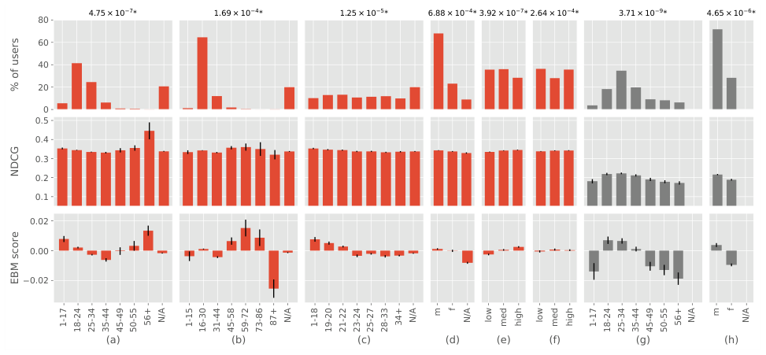
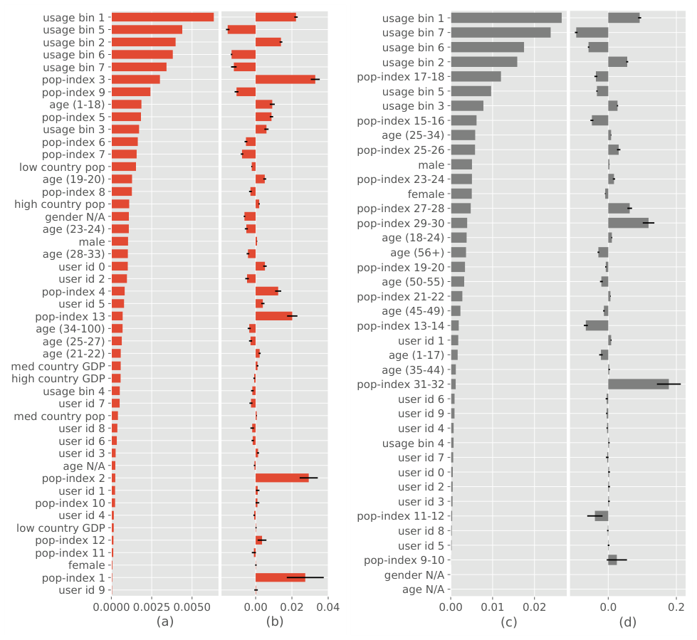

Revisiting Popularity and Demographic Biases in Recommender Evaluation and Effectiveness (再审视推荐评测与效果中的流行度与人口统计偏置)
- 会议/期刊: ECIR 2022
- 作者与机构: Nicola Neophytou (University of Manchester), Bhaskar Mitra (Microsoft), Catherine Stinson (Queen's University)
- 推荐链路定位: 离线评测诊断（Top-N 召回/排序效果的公平性评估）
- 研究方向: 去偏公平与可信推荐 / 冷启动与长尾推荐
- 论文原文: https://arxiv.org/abs/2110.08353v1
- 开源代码: https://github.com/benfred/implicit（模型实现；数据清洗脚本见论文脚注 bens-blog-code）
TL;DR (1分钟核心速览)
离线推荐评测通常只报告全体用户的平均 NDCG，掩盖了不同用户群体之间的效用差距。本文复现 Ekstrand 等人的性别/年龄差异结论，并把分析扩展到国家、使用量 (usage) 与自创的 pop-index 三个属性上。在 LFM360K 与 ML1M 上用 ALS 隐式反馈模型做 5 折交叉验证 + 每用户 20% 留出、每用户生成 1000 条推荐，以 NDCG/MRR/RBP 与 Kruskal-Wallis 检验评估，并用 EBM 做特征归因。结果显示：等用户数分桶后效用随年龄单调下降（\(p=1.25\times10^{-5}\)），男性高于女性（\(p=4.65\times10^{-6}\)@ML1M），国家代表性越高效用越高；而 usage 与 pop-index 才是性能的最强预测因子（\(p\)低至\(10^{-43}\sim10^{-166}\) 量级），可将部分"人口差异"解释为表征不足。
Background & Motivation (背景与核心矛盾)
- 主流范式: 以 ALS/BPR 等隐式反馈模型为对象，在 LFM360K、ML1M 上做离线 Top-N 评测，按人口属性分桶后比较组间平均效用。
- 前人局限: (1) Ekstrand 等人只用原始不等宽年龄桶，各组用户数极度偏斜，小样本桶使检验功效不足，"无趋势"可能只是统计假象；(2) 只覆盖年龄与二值性别，未控制 usage、内容流行度等强混淆变量，无法判断效用差异来自"人口属性"还是"表征量"。
- 核心洞察 (Key Insight): 分桶策略本身会改变结论——改成等用户数分桶后，年龄与效用的负相关才显现；同时 usage 与 pop-index 在 EBM 中的重要性远超所有人口属性，且这两者在人口群体间分布显著不均（如 34+ 用户 24% 落在最低 usage 桶，而 1–18 岁仅 11%）。
- 本文切入点: 用"多分桶敏感性分析 + 新增混淆属性 + 可解释加性归因模型 + 阴性对照特征"四件事，把相关性分析做得更接近可归因。
Method (核心方法设计)
1. 整体框架 (Overall Architecture)
本文不提出新模型，而提出一套可复现的公平性诊断协议：在固定 ALS 推荐器（implicit 库，\(d=50\)、\(\lambda=0.01\)、30 次迭代）上做 5 折交叉验证，每折为每个用户留出 20% 交互作测试集，生成 1000 条推荐后计算用户级 NDCG/MRR/RBP；随后按年龄（三种分桶）、性别、国家（按用户数/按 GDP）、usage、pop-index 五种属性分桶，对组间 NDCG 做 Kruskal-Wallis 检验并施加 Bonferroni 校正；最后用 EBM 以用户属性为特征、以该用户 NDCG 为标签做加性归因，并插入一个本应无预测力的对照特征（user-ID 末位数字）验证流程有效性。
flowchart TD
A["LFM360K / ML1M 隐式交互"] --> B["5 折 CV + 每用户 20% 留出"]
B --> C["ALS 隐式反馈 (d=50, λ=0.01)"]
C --> D["每用户 Top-1000 → NDCG/MRR/RBP"]
D --> E["五属性分桶 + Kruskal-Wallis + Bonferroni"]
E --> F["EBM 加性归因 (含 user-ID 阴性对照)"]2. 关键设计拆解 (Key Designs)
-
年龄的三重分桶敏感性分析（破解统计功效陷阱）：前人只用原始不规则年龄桶，桶内样本悬殊。本文并行采用 (i) 原始桶、(ii) 等宽 15 年桶、(iii) 等用户数桶。只有在 (iii) 下才浮现单调趋势 \(\overline{\mathrm{NDCG}}(a_1)>\overline{\mathrm{NDCG}}(a_2)>\cdots\)（\(a\) 为年龄桶序号）。直觉很直接：把"组间差异检验"从受样本量支配的量，转换为受真实效应支配的量。
-
pop-index：刻画"用户口味主流度"的 h-index 类比指标：流行度偏置研究通常只用物品侧统计，缺少用户侧聚合量。本文定义
即"该用户听过的物品中，至少有 \(p\%\)同时被\(p\%\)的全体用户交互过"的最大\(p\)。它把用户的口味主流程度压缩为一个可与 usage 正交比较的整数，从而把"主流用户是否被更好服务"从定性讨论变成可检验假设。
- 训练目标与推理开销 / EBM 归因：推荐器沿用标准隐式 ALS 加权平方损失 \(\min\|\mathbf{R}\odot(\mathbf{P}\mathbf{Q}^{\top})\|\)（置信度\(c_{ui}=1+\alpha r_{ui}\)），负样本由全库未交互隐式处理，无显式负采样。EBM 采用加性形式\(g(\hat{y})=\beta_0+\sum_j f_j(x_j)\)，每个\(f_j\) 为可读的阶梯/样条函数，无需后验解释器；推理成本极低（仅一次全库内积排序 + 若干分组统计），在单机上即可完成全部实验，正是其可被工业侧"低成本跑一遍"的关键。
Experimental Setup & Evaluation Protocol (实验设置与评估协议)
- 数据集与预处理:
| 数据集 | #Users | #Items | #Interactions | 稀疏度 | 特征/场景说明 |
|---|---|---|---|---|---|
| LFM360K | 358,868 | 292,385 | 17,535,605 | 99.98% | 音乐；user.getTopArtists() 榜单快照（"播放列表"）；含 gender(67%M/24%F/9%缺失)、age(20%缺失)、country(无缺失)；剔除听过 ≤40 位艺人的用户（约 10%） |
| ML1M | 6,040 | 3,952 | 1,000,209 | 95.81% | 电影；5 星评分；含 gender/age/occupation，无 country；天然所有用户 ≥20 评分 |
- 数据划分与防穿越: 5 折交叉验证 + 每用户随机留出 20% 交互作测试集（非全局时间戳切分，存在轻微时序穿越，作者未讨论）；LFM360K 每折测试 5,000 名随机抽样用户，ML1M 每折 1,208 人。冷启动用户经上述 ≤40 艺人规则剔除。
- 排名评测协议: 每用户生成 Top-1000 候选（从全库未交互物品中排序，无负采样比，属近 Full-Ranking 的截断评测），指标为 NDCG、MRR、RBP；组间显著性用 Kruskal-Wallis（非参数、不假设正态）+ Bonferroni 多重检验校正，n/a 组不参与检验；显著性水平 \(p<0.01\)。
- 对比基线与超参设置: 无模型基线对比（属分析型论文），对照对象是 Ekstrand 等的原始结论；嵌入维度 \(d=50\)、正则\(\lambda=0.01\)、30 次迭代（
implicit默认值，未调参）；EBM 经 InterpretML 实现，两种设置：各因素等量采样用户 / 全库用户。
Key Experimental Results (实验关键数据)
1. 主实验对比 (Main Results)
论文的"主表"是分属性组间效用对比（趋势 + Kruskal-Wallis \(p\) 值，NDCG 为主指标）：
| 属性 (数据集) | 分桶方式 | NDCG 组间趋势 | KW \(p\) (NDCG) | MRR/RBP 是否一致 | 与原研究关系 |
|---|---|---|---|---|---|
| 年龄 (LFM360K) | 原始桶 (Ekstrand) | 组间差异显著，无单调性 | \(4.75\times10^{-7}\) | 一致 | 复现 ✔ |
| 年龄 (LFM360K) | 等宽 15 年 | 显著差异 | \(1.69\times10^{-4}\) | 一致 | 新增 |
| 年龄 (LFM360K) | 等用户数 | 随年龄单调下降 | \(1.25\times10^{-5}\) | 一致 | 新增（关键） |
| 性别 (LFM360K) | 二值 | 男 > 女 | \(6.88\times10^{-4}\) | MRR/RBP 不显著 | 复现 ✔ |
| 国家 (LFM360K) | 按用户数 低/中/高 | 代表性越高，效用越高 | \(3.92\times10^{-7}\) | 一致 | 新增 |
| 国家 (LFM360K) | 按 GDP 低/中/高 | 无单调趋势 | \(2.64\times10^{-4}\) | MRR/RBP 不一致 | 新增 |
| 年龄 (ML1M) | 预设年龄段 | 显著差异 + 下降趋势 | \(3.71\times10^{-9}\) | MRR 不显著 | 复现 ✔ |
| 性别 (ML1M) | 二值 | 男 > 女 | \(4.65\times10^{-6}\) | MRR 不显著 | 复现 ✔ |
| 对照特征 | user-ID 末位 0–9 | 无差异 | 不显著 | 不显著 | 流程有效性验证 ✔ |

2. 消融实验 (Ablation Study)
以"移除/替换关键分析组件"的方式做敏感性消融：
| 配置 | 观察结果 | 结论 |
|---|---|---|
| w/o 等用户数分桶（仅保留原始桶） | 年龄趋势被掩盖，只见"显著"不见方向 | 分桶策略是结论的必要条件 |
| w/o pop-index（仅用 usage） | 无法区分"主流口味"与"交互多"两种优势来源 | pop-index 提供正交解释力 |
| w/o EBM 阴性对照特征 | 无法排除流程本身引入的伪显著 | 对照特征是可信度基石 |
| usage 分桶 (LFM360K) | NDCG 随 usage 上升，但最低桶高于次低桶（\(p=2.26\times10^{-156}\)） | 存在淘汰/自选择效应 |
| pop-index 分桶 (LFM360K) | U 形：主流与极小众用户都更好 | 重复收听可"作弊" |
| pop-index 分桶 (ML1M) | 单调上升（\(p=1.19\times10^{-5}\)） | 需推荐新物品时主流口味占优 |
| EBM 特征排序 (LFM360K / ML1M) | usage ≻ pop-index ≻ 年龄 ≻ 国家 ≻ 性别 | 表征量比人口属性更重要 |

3. 关键实验发现 (Key Findings)
- 分桶策略决定结论方向：原始年龄桶下仅得到 \(p=4.75\times10^{-7}\)的"存在差异"；换成等用户数桶后，LFM360K 的 NDCG 随年龄呈单调下降（\(p=1.25\times10^{-5}\)），说明 Ekstrand 等未观察到趋势是小样本桶导致的统计功效损失，而非效应不存在。
- usage 的解释力碾压人口属性：EBM 中 usage 分桶在所有特征中排名第一，其组间 NDCG 检验 \(p\)低至\(10^{-43}\sim10^{-166}\)；而性别在 LFM360K/ML1M 仅\(6.88\times10^{-4}\)/\(4.65\times10^{-6}\)，相差数个数量级。同时表 1 显示 34+ 岁用户 24% 位于最低 usage 桶（1–18 岁仅 11%）、女性 11% 位于最高 usage 桶（男性 16%），即"弱势群体"与"低表征群体"高度共线。
- 数据集语义改写流行度结论：ML1M 上 pop-index 与效用单调正相关，而 LFM360K 上呈 U 形——因为 LFM360K 记录的是可重复收听的"最爱艺人"，模型可通过重复推荐历史物品轻松拿到高分；ML1M 必须推荐未见过的电影。这提示流行度偏置的度量强依赖交互语义，跨数据集外推需谨慎。
Highlights & Limitations (亮点、对比与审稿批判)
- 与代表作对比 (vs. Prior Work): 相比 Ekstrand 等（两数据集、年龄+性别、单分桶），本文增加三数据集属性维度、三套分桶、EBM 归因与阴性对照，把"是否存在差异"推进到"差异由什么驱动"；相比 Mehrotra 等在搜索场景发现的"低满意度用户反而高分"悖论，本文在 LFM360K 最低 usage 桶复现了类似异常，并给出"淘汰 + 注册冷启动物品"两种可能解释。
- 可迁移亮点: (1) pop-index 可直接作为长尾/流行度分桶的通用诊断指标，用于检验推荐器是否只服务主流口味；(2) 阴性对照特征（本应无预测力的 user-ID 末位）应成为公平性显著性检验的标准动作，可低成本发现统计流程伪显著。
- 审稿级局限批判: (1) 全篇仅一个 ALS 配置（\(d=50\)、\(\lambda=0.01\)、30 iters、未调参），结论对模型族与超参的稳健性未知，深度学习序列模型是否呈现同样趋势尚未验证；(2) 分析纯为相关性，缺乏干预与时间序列数据：无法区分"效用低导致少用"与"少用导致效用低"，而作者自己承认这是核心因果缺口；LFM360K 仅含各用户 Top 艺人快照而非完整曝光日志，曝光偏置与位置偏置被混入其中，可能同时放大 usage 与 pop-index 的效应估计。
Rating (四维评分)
- 方法创新性 (Novelty): ⭐⭐⭐ （无新模型，但诊断学贡献实在：pop-index 类比 h-index 有新意，多分桶敏感性 + 阴性对照的方法论价值高于算法价值）
- 评估协议与实验扎实度 (Protocol & Experiments): ⭐⭐⭐⭐ （5 折 CV + 每用户 20% 留出 + Top-1000 + 三指标 + KW 检验 + Bonferroni 校正 + EBM 全库/等采样双设置，复现严谨；扣分在于单模型单超参、无时间切分）
- 写作与数学规范度 (Clarity & Rigor): ⭐⭐⭐⭐ （RQ1–RQ3 组织清晰，pop-index 定义紧凑，图表自洽；但部分 \(p\) 值与误差棒未在正文逐项给出，AUC 级细节需回看原图）
- 工业落地与复现价值 (Industrial & Practical Value): ⭐⭐⭐⭐ （基于开源
implicit与 InterpretML，全流程单机可跑，可直接嵌入上线前的公平性体检报告；但缺乏因果干预手段，线上 A/B 与长期留存影响仍需另行验证）